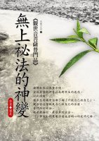

|
|
| 首頁 |
|
 無上祕法的神變 序觀世音普門品出自《法華經》。《法華經》是諸佛所珍藏的無上秘法。普門品是《法華經》中的精華。《法華經》是諸佛第一秘義深經，觀世音普門品即是秘義中的秘義。 修持者若能了悟諸佛秘義，即是獲得此生成就的無上法寶。因此依諸佛第一義來解讀普門品，是修持者獲得無上法寶的關鍵。目前解讀普門品的書刊很多，但大多都是從世間的實用角度出發。以有求有得，實現願望為前提，以靈感靈驗為目的來解說普門品。這是因為經文中的觀世音菩薩，可以滿足眾生的一切需求。 不過觀世音普門品畢竟是諸佛所護第一深經。是令眾生開佛知見，示佛知見，悟佛知見，入佛知見的無上法寶。因此解讀普門品應以了義入佛智慧，應以實修入般若觀照，超越世間種種幻化，直趣諸佛無上菩提。只有如此才能使諸佛秘法重放光輝，才能令諸眾生得聞諸佛真實智慧。乃至依此光明智慧，速得無上菩提。也只有如此方可能有荷擔如來家業之人。 儘管接引眾生需要很多方便，但是不可以降低標準來推廣佛法。若以降低佛法標準來宣傳佛法，可能大違佛意。因為這樣一再降低佛法的結果，將會使無上佛法變成世間法。為了適應不同的人，而以種種方便開示佛法，本來是無可厚非的。但問題的關鍵是，在方便時不可失去第一義。若僅僅與世法相同，只要不失第一義或不忘第一義倒亦尚可，然而事實並非如此。降低佛法標準來宣導佛法似乎只是為了方便，放棄第一義變成是理所當然的。 更令人不解的是，流傳於世面上的佛法名相解讀、實修指導，所解釋的恰好與佛所說相反。由此可知，由於不斷的強調方便而降低第一義，所形成的後果有多麼嚴重。對於降低佛法標準所形成的後果，佛早已瞭若指掌。因此佛於經文中一再告誡，不可降低佛法的標準。 佛經中到處可見的功德校量，就是佛對此種一再降低佛法標準的嚴肅告誡。本系列叢書第二冊《永恒的付囑》裡就指出，諸佛秘義的傳承是以質量超越數量。其超越的倍數是算數所不能譬喻的。 佛於很多經中都一再指出，若有人能令無量恆河沙數世界眾生都得一果，不如令一人成阿羅漢果。若有人能令無量恆河沙數世界眾生都得阿羅漢果，不如令一人發菩提心。若有人能令無量恆河沙數世界眾生都發菩提心，不如令一人得最後身菩薩。若有人能令無量恆河沙數世界眾生都成最後身菩薩，不如令一人疾得成就無上菩提。 這類的功德校量，經中隨處可見。由此可知，佛對信眾的質量與數量的告誡有多麼清楚。事實是，沒有質量，數量再多亦沒有意義。因此不能因為數量而犧牲質量。為了壯大信眾的數量而一再降低質量的作法有違佛意。日子一久，信眾已不知什麼是第一義，更不用說秘義了。 佛法至今已超過二千五百四十九年，若以十五年僅偏差一度，二千五百年來佛法已偏差近一百七十度。一百七十度已經是反方向了。因此加深對佛法的解讀勢在必行。 為了讓有緣人了解諸佛秘義，為了讓人們能依此法寶實際修持，亦是為了善業成熟之人，能依此諸佛秘法速證無上菩提的需要，此光明系列叢書第六冊即依第一義、依實修，出此專輯，講解觀世音菩薩普門品中的諸佛秘法。 此法既簡便又神奇，其修習進程的神速令人不可思議。只要試一試，你就會知道，諸佛秘法真實不虛，能除一切苦，能滿一切行願，能成就一切功德。 |
| 著作權所有 請勿任意轉載 Copyright © 2000-2026 Is Zen Center All Rights Reserved |